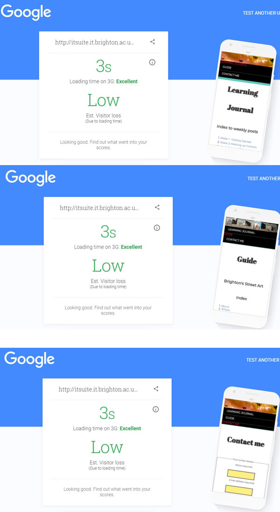
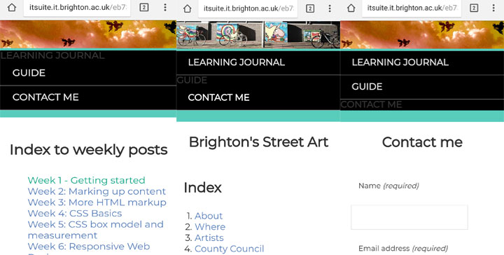
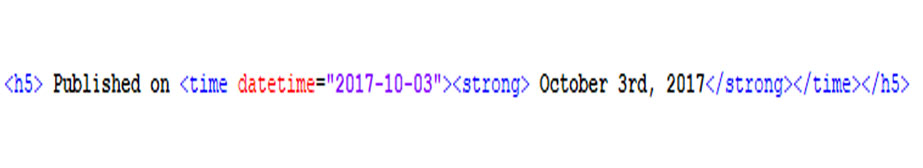

In Steve Krug's book ‘Don’t Make me think’ (2000, p.139-153), he discusses the different ways in which
you can test a website and the benefits of doing so. Testing informs your judgement by showing that people use the web
in different ways.
Two methods of testing:
Testing comparable sites. These sites could be similar in style, organisation or features. This can be done during the design stage.
Watch people while they use the website. This allows you to see where people run into trouble. Krug suggests that 3 to 4 people are ideal.
After working on my website for so long, I needed a fresh pair of eyes, so applied the second method of testing and
asked my friends and family to have a look at my website. There was a consensus for more visual aids and my friend who studied
graphic design suggested that I should line up my boxes on my guide page. I took their advice and applied it to my website.
Evaluation
I have tested all three pages of my website with excellent outcomes. I have made sure that my site is compliant with W3C HTML and
CSS web standards and that my website displays on different browsers and is compatible with various devices.
I have made sure that my website is accessible to people with disabilities. For deaf people, I have used 'alt' or 'figcaption' tags
to describe my images, and for people who are visually impaired, I have made sure my text is clear by using black text on top of a white background,
and large, high-quality images.
Through the process of making my site, I have discovered how to use HTML and CSS to create a responsive website.
With independent study, I have learnt about the legal and ethical issues surrounding using 3rd party assets and code.
I have made sure that I have permission to use anything that is not my own and have referenced any third party.
Although, I was unable to find out what was causing a small uploading error, my website is still mobile friendly. I have gone into more detail
about this error in week 10.
I have enjoyed creating this site and have learnt by applying techniques gathered from my lab tutorials and independent study.
I am looking forward to developing more sites in the future.
Results
HTML validation
Own Screenshot; Elena Barry
CSS validation
Own Screenshot; Elena Barry
Browser compatibility testing
Own Screenshot; Elena Barry

Google test your mobile speed
Own Screenshot; Elena Barry
Google mobile-friendly test
Own Screenshot; Elena Barry
Protofluid responsive design test
Own Screenshot; Elena Barry
These are side by side screenshots of all three pages on my phone. After taking these screenshots,
I noticed that the active link on my menu disappears into the background. I fixed this by using a bright red
colour to contrast against the black.

Phone screenshots of my finished website
Own Screenshot; Elena Barry
I fixed the uneven margins either side of my heading on my guide page. I did this by targeting sections of my webpage with different
colours and by experimenting using different content either side of the problem areas. I discovered that the individual galleries were
disrupting my margins. I fixed the problem by bringing all of the photographs on my page together to create one large gallery.
This not only solved the problem, it made my page more concise by getting rid of unnecessary length which could frustrate users.
After creating my gallery, I discovered that the place links, linked to the writing at the bottom of the image so that you couldn't
see the image without scrolling up. I have swapped the title so that it is now on top of the picture.
Screenshot of Gallary
Own Screenshot; Elena Barry
z-index
Boxes can overlap. The elements later in the HTML code can sit on top of earlier elements.
The z-index property allows you to control which elements sit on top.
The higher the value used the closer the element is to the front (Duckett, 2011, p.369).
Position Property
Positioned elements are either relative, absolute, fixed or sticky (Mozilla Developer Network, 2018).
Using positions, I was able to overlap my banner with a header. I gave my heading, a position of 'absolute' and gave my
banner, a position of 'relative' which shifted my banner to the bottom. However, I discovered that problems arose from doing so.
Google and other search engines regard headings highly and making the banner and text responsive proved to be difficult.
Screenshot HTML & CSS code
Own Screenshot; Elena Barry
Screenshot of banner
Own Screenshot; Elena Barry
Testing mobile friendliness
I started to test my website and came across these errors on my guide site.
I have since removed the interactive google map and have replaced it with a screenshot version. However,'up.png' doesn't exist. This error
also shows up on my learning journal. I have looked in my computer, all my HTML and stylesheets and in my images folder but 'up.png' is nowhere
to be seen.
Testing my website
Own Screenshot; Elena Barry
Searching for 'up'
Own Screenshot; Elena Barry
Testing mobile speed
I mentioned in week 5 about paragraph drop caps reducing the speed of my website.
The score below is with paragraph drop caps inserted into my guide page. However, when I took the paragraph drop caps out
my guide page speed was rated excellent. I am going to try to reduce the amount of drop caps I am using to see
if I can increase my score. If I can not get my score up, I will remove the paragraph drop caps altogether
as it is not worth losing 10% of visitors.
Testing mobile speed of Guide page
Own Screenshot; Elena Barry
Validating CSS
I have validated all three pages and have found no errors! I have got two warnings from using '::-webkit-scrollbar' which is a
CSS pseudo-element that affects the style of a scrollbar. I am getting warnings from using it because it is non-standard.
I am using it so that a scrollbar will show up on my table and my message box on an iOS device.
I have mainly been using my laptop to work on my website. When I looked at my site on a lab computer, I realised that the colours
I had chosen on my laptop looked completely different on the lab computers. The wrapper looked neon green! To fix this, I used both my laptop
and a lab computer simultaneously to change the colours so that they worked in harmony on both machines.
The heading for each of my posts on my guide has inconsistent margins. The problem has been targeted with coloured sections.
Uneven headers
Own Screenshot; Elena Barry
HTML Forms
HTML5 forms help to improve user experience and helps to cut down the amount of JavaScript that a web developer must write when carrying
out form validation (Clark, 2017).Important forms include:
Search: Search is the most commonly used form, from google searches to searching an actual website. I tried adding a search bar to my page, but I realised I needed the corresponding JavaScript.
URL: A browser will check if the entry to this field is correct. If the form is not entered the browser presents an error message.
Number: You can expand this by adding a min and max range.
I experimented with my contact form. I centered my text, input boxes and ‘textarea’ to fit my theme. I made the 'textarea' so people
could write longer messages with ease. I then added responsive CSS to target the ‘textarea’ so that its contence would not overflow on smaller devices.
I used Harvard referencing and added a link to each of my references within the writing to its primary reference.
If the reference was a website, I added a link to that site in the primary references which open in a new tab.
I resolved my problem with overflow by adding a scrollbar to my references by using the CSS ‘overflow: auto’.
After taking this screenshot I then used the margin attribute in CSS to put space around the individual references so that they are
clear to the reader.
Screenshot of overflow
Own Screenshot; Elena Barry
I embedded a google map so that users could get an understanding of the areas I am talking about within my guide.
Screenshot of new layout & google map.
Own Screenshot; Elena Barry
Writing Scannable Text for the Web
I made my text scannable with subheadings, keywords in bold and lists to separate information out and to make it
more user friendly. At first, I made every keyword bold, but I found this made my text look cluttered. The University of Wisconsin law school website
recommended an inverted pyramid style. This is where each post starts with a conclusion, followed by the most important supporting information,
and ends by giving the background information (Law.wisc.edu, 2017). Although, this format would not be right for each of my blog
posts, I will try and create a clear visual hierarchy on each page, where I begin with an overall reflection of the week, followed by my
independent reading and how I learnt and applied it to my website in chronological order.
Screenshot of scannable writting
Own Screenshot; Elena Barry
Omit needless words
In chapter 5 of ‘Don’t make me think’. Krug talks about writing for the web. He suggests that ‘happy talk’
found in introductions and unnecessary instructions ‘needs to die’(Krug, 2000, p.45-48).
He explains the benefits of getting rid of unnecessary words:
'It makes the pages shorter, allowing users to see more of each page at a glance without scrolling.'(Krug, 2000, p.45-48)
Layout
In chapter 15 of Duckett's book 'HTML & CSS', Duckett (2011, pp.361-368) discusses layout and how to control where each
element sits on a page. Each HTML element is treated as if it is in its own box.There are two types of boxes:
Block-level boxes: Act as the main building blocks. They start on a new line. E.g. <h1> <p> <ul> <li>
Inline boxes: Flow between surrounding text. E.g. <img> <b> <i>
Normal Flow
Every block-level element appears on a new line.
Relative positioning
This shifts and element to the top, right, bottom, or left of where it would have been placed.
Absolute positioning
This positions the elements in relation to its containing element. It does not affect the position of any surrounding elements and the elements move as users scrolls.
Fixed positioning
This is a form of absolute positioning that positions the elements in relation to the browser window. The elements do not move as users scroll.
Floating Elements
Allows you to position element to the far left of right of a containing box.
Creating a multi-column layout
You can split a body of content into many different columns by using the column-count property to specify the number of columns you want.
The column-count property divides your content equally into that number of columns. E.g.
section {
column-count: 3;
}
Or you can use column-width property. The browser uses the columns that best-fit this specified length.
To change the layout style on my guide page, I have used a separate stylesheet for my index page. Utilising another stylesheet is common
in web development. Some authors might use a stylesheet to control the layout and another to control fonts and colours
(Duckett, 2011, p.395).
This screenshot shows what my website looked like before I started this week’s lab. I am finding
as I am adding new content, that how I want to display my content is continually changing.
Screenshot of my website
Own Screenshot; Elena Barry
In lab 7 I learnt how to add a banner. I have used the fishes from my previous design. I am currently trying to figure out how I can
put a title on top of my banner
Screenshot of my banner
Own Screenshot; Elena Barry
I have decided to change my guide from Brighton Palace Pier to Brighton’s street art as it something that
I find interesting. This screenshot shows how my guide page currently looks.
I have made a video of a walk down Trafalgar lane. Unfortunately, after uploaded the film to both ‘YouTube’ and ‘Vimeo’
I couldn't get the video to display on my page. I fixed this problem by creating a new folder for videos within ‘mysite’ folder, and then
uploading it from the folder.
Screenshot of my guide
Own Screenshot; Elena Barry
In 'HTML & CSS', Duckett (2011, pp.109-112) suggests saving images that contain multiple colours as jpegs.
If the image contains few colours, e.g. a logo, then you should save the image as a png.
Responsive Web Design
I learnt that responsive web design reduces loading speed. Using CSS as an alternative for decorative effects will reduce the weight
of the page and therefore, its loading time. Each separate HTTP request that a web page makes will add to the loading
time of the web page (Peterson, 2014, pp.136-138).
To increase the loading speed of my site, I have used photoshop to resize my images to the maximum size I would like them to be displayed.
I have also grouped my pictures together on my guide page by using a flex gallery.
Screen Size
There are many different sized screens which show varying amounts of information. The variation of screen sizes available means that my website
design needs to be able to work on a range of different sized screens. Web designers tend to create pages of around 960-1000 wide as most users
will be able to see designs this wide on their screens (Duckett, 2011, pp.377-386).
Fixed width layouts
Fixed width layout designs do not change size as the user increases or decreases the size of their browser window.
Liquid layouts
Liquid layout designs stretch and contract as the user increases or decreases the size of their browser window.
Screenshot of moving the wrapper
Own Screenshot; Elena Barry
I experimented with the wrapper further and discovered I could use it in a way that the white background of the
wrapper would only be visible for each post. I realise that this is not the aesthetic of a professional or an easy
to navigate website. Playing around with these features allowed me to understand the individual values and properties in more detail.
This image shows how my website looked like after completing the lab. The page does not look as clean as I would like it to be and my CSS page
has become cluttered. I am going to go back to the beginning and use what I have learnt through experimentation to build up my CSS.
Screenshot of website
Own Screenshot; Elena Barry
Screenshot of website on phone
Own Screenshot; Elena Barry
Introduction to CSS Layout
For this week’s independent learning I looked at ‘Introduction to CSS Layout’: Normal layout flow
The position property
A static position is the default in the normal flow, but you can cause elements to be laid out differently using other values.
Floats
Applying a float value such as left can cause block level elements to line up alongside one another rather than sit on top of one another.
The display property
Standard values such as block, inline or inline-block can change how elements behave in normal flow.
Using a float is a technique that allows the elements to float to the left or right of one another,
rather than the default of sitting on top of one another. The primary uses of floats are to layout columns
and float text around an image. It is essential to clear floats afterwards as all the content below the float
that isn’t floated itself will wrap around the floated elements (Mozilla Developer Network, 2017).
In week three I used this technique to float an image to the right of my text.
Using Media Queries
Media queries are used to give specific characteristics to a given user agent, output device, or environment
(Mozilla Developer Network, 2017). I am currently using media queries in my CSS to target different screen sizes.
You can create a media query that depends on multiple conditions by using logical operators: 'not', 'and' and 'only.'
The keyword ‘and’ combines a media feature with a media type or other media feature.
The keyword ‘not’ inverts the meaning of an entire media query.
The keyword ‘only’ prevents older browsers that do not support media queries with media features from applying the queries style.
Photograph of current website.
Own photograph; Elena Barry
Reflection
This week I experimented using repeated images as my background. I used a picture that was initially of Brighton beach so
that it would be cohesive with the theme of my guide on Brighton Palace Pier. Using photoshop, I decreased the saturation of the background
image so that everything inside the wrapper would stand out in contrast. This is so that the background will not distract the reader from the text.
I then experimented moving the wrapper element further down my page. I did this so that I could use my background image as a background to the
title of my page. I realised that I could create an image of my title in photoshop and then include it inside the wrapper.
Image version of title
Own image; Elena Barry
I used graduating colours for my post titles. I decided to limit using graduating colours to my post titles as my text could become
harder to read in larger areas. Using a section tag I changed the background of my blog posts back to white to give the reader more clarity.
Using W3C's website (W3schools, 2017), I investigated different ways of displaying my navigation bar.
Box Model Recap
I looked at ‘Styling boxes: Guide: Box model recap’. Margin Collapsing is when two boxes touch against one another.
The distance between the boxes is the value of the largest of the two touching margins.
Content does not always fit within the allowed size which means that the content overflows the box. The ‘overflow’
property controls this (Mozilla Developer Network, 2017).
My references are currently overflowing so I will use different overflow values to see which style will fit my website most appropriately.
Auto
If there is too much content, the overflowing content is hidden, and scroll bars are shown to let the user scroll to see all the content. I have used this on my table.
Hidden
If there is too much content, the overflowing content is shown outside of the box.
Outline
The outline of a box is something that looks like a border but which is not part of the box model. It behaves like the border but is drawn on top of the box without changing the size of the box.
I looked at changing background styles using CSS.
It is essential to set a default background colour, I have set mine to the orange. Background image gradient comes in two forms:
Linear gradients that go from one line straight across to another.
Radical gradients which radiate out from a single point.
I experimented with linear gradients and decided on ‘background-image: linear-gradient(to top, #A8D0EC, #FFA259 25px, #FFBB59 50px);’.
I started out using ‘repeating-linear-gradient’ however when I looked at this style on my phone the repetition of the colours made the
content unreadable.
Paragraph with drop caps
This week I experimented using paragraph drop caps. I love the way it makes my page look! Unfortunately, it increases my page's loading time,
and the more I use, the slower my web page becomes. As my guide page is aimed at new students, the aesthetic of my guide page is slightly more important
than the aesthetic of my learning journal. My guide page will also have less
content to load than my learning journal. For these reasons, I have decided to only
use paragraph drop caps for my guide page.
Learning Journal with paragraph drop caps.
Own Screenshot; Elena Barry
Styling Tables
I then looked at ‘Styling tables’ (Mozilla Developer Network, 2017). After reading this page,
I removed the line of CSS that was in my HTML index page and replaced it with new rulesets in my stylesheet.
I attempted styling with CSS for the first time. I used different light colours and highlighted each post title and its text.
I have tried to use contrasting colours so that someone with impaired vision or colour blindness would still be able to read my contents easily.
How CSS Works
I looked at ‘How CSS works’ (Mozilla Developer Network, 2017). The browser converts HTML and CSS into the Document
Object Model which represents the document in the computer’s memory.
It combines the document’s content with its style. The browser displays the contents of the DOM.
Are human-readable identifiers that indicate which stylistic feature you want to change.
Values
a value which indicates how you want to change those stylistic features.
CSS declaration
Is a property paired with a value.
A ruleset
Is the selector and declaration block.
CSS Syntax
Own image; Elena Barry
Values and Units
I looked at CSS ‘Values and Units' (Mozilla Developer Network, 2017). Relative units are relative to the current
elements font-size or viewport size.
em: 1 em is the same as the font-size of the current element (width of a capital M). I have converted my px sizes into em in my stylesheet
using an online converter.
A liquid layout could be used to ensure that a standard document will always fit on the screen and look ok across
varying mobile device screen sizes. I would like my website to achieve this.
Colours can be represented as hexadecimal values. Each pair of value represents one of the channels red, green and blue.
I have used hexadecimal values created by a CSS colour picker online.
I found that there are other ways of representing colour.
RGB is where each channel is represented by a number between 0-255 e.g. rgb(0,0,255);
HSL is slightly less well supported than RGB. It was implemented after interest from designers.
Hue- the base shade of the colour. The value is between 0-360.
Saturation- 0-100%
Lightness-0-100%
RGBA and HSLA let you set the transparency you want the colour to have. Value from 0 – 1. 1 being opaque.
This is something that I would like to look into further so that I can apply it to my own website.
Then I looked at ‘Cascade and Inheritance’ (Mozilla Developer Network, 2017).
Specificity is a measure of how specific a selector is; how many elements it could match.
Element selectors have low specificity.
Class selectors have higher specificity.
ID selectors have the highest specificity.
To make sure that a certain declaration will always win over all others use ‘!important’. Only use it when you must.
'!important' overrides ID selectors.
If multiple competing selectors have the same importance and specificity, source order decides hierarchy.
Inheritance is the idea is that some property values applied to an element will be inherited and some won’t.
E.g. font-family and colour are inherited. Margin, padding, border and background image is not inherited.
Creative Commons (Creativecommons.org, 2017) is a website that allows you to share your knowledge and creativity legally.
It provides free copyright licenses that permit the public to share and use your work under the conditions of your choice.
The Creative Commons goal is to increase the amount of openly licensed creativity.
'The Commons' is a searchable collection of work that is legal to use and share. I have used the 'the commons' to find the calming panda below.
This image is licensed under Creative Commons Attribution 3.0.
For my independent work this week I looked ‘Document and Website Structure’ (Mozilla Developer Network, 2017).
Non-semantic wrappers: Using <div> and <span> elements are a great way to wrap the same content together when you can’t find
an ideal semantic element to group them in. I have used a <div> element for my table and have used the class attribute ‘table container’ so
that I can later target it with CSS: <div class="table-container">. The problem with div elements is that they can
clutter HTML and can have a hard time updating and maintaining your document.
<br> creates a line break which I might choose to break some of my paragraphs up with.
<hr> creates a horizontal rule that shows a thematic change in the text.
Creating Hyperlinks
I then looked at ‘Creating hyperlinks’ (Mozilla Developer Network, 2017).
Document fragments is where you can link to a specific part of an HTML document.
I touched upon this concept in my last entry. I have used this earlier in my learning Journal,
linking my page after each entry to the top of my website.
Absolute URL
Will always point to the same location, no matter where it is used.
Relative URL
Will point to a location that is relative to the file you are linking from.
Content Model
This week I began watching the HTML and CSS playlist on ‘Lynda’ (Lynda.com - from LinkedIn, 2017).
Where I learnt more about the ‘Content Model'. The ‘Content Model’
defines the type of content expected of an element and controls the syntax rules.
The 7 main models are:
Metadata Content
Sets up the format.
Embedded
Is anything that is imported into the document
Interactive Content
Are things that the user clicks on etc.
Heading
Defines the heading of a section.
Phrasing
Is text and elements that are used in formatting
Flow content
Elements that are involved in normal flow.
Sectioning content
Defines the scope of sections.
‘Pre’ stands for preformatted.
<pre></pre> tags makes text into a monospace font and respects whitespace.
I will use this in my future posts when I haven’t decided the format of my text yet.
Screenshot of current website.
Own screenshot; Elena Barry
Taking regular screenshots is a good way of showing progress and decision making. I have swapped the image inside this
screenshot for this more appropriate screenshot.
ISO 8601
This week I looked at ‘ISO 8601’ (En.wikipedia.org, 2017). ISO 8601 is an international standard representing dates and
times. It was first published in 1988. Its intention is to avoid misinterpretation of the representation of date and
times from different countries’ formats.
The general principle is that date and time values are ordered from the largest to the smallest unit of time.
Each date and time value has a fixed number of digits that must be padded with leading zeros.
I have used this format when expressing ‘datetime’ <time datetime="2017-11-07">.
Character Entities
I have used a large reference of character entities (Dev.w3.org, 2017)
to change the ‘<' and ‘>’ characters around example tags so that the browser doesn’t confuse them with actual tags.
I have also used these character entities to temporarily change the title of my blog.
Reference Entites
Own Screenshot; Elena Barry
HTML & CSS
I read about text, lists and links in 'HTML & CSS' (Duckett, 2011, pp.40-90). I discovered the difference between
bold <b> and strong <strong> tags and italic <i> and emphasis <em> tags. Strong is used to indicate that its contents have
strong importance and will show its contents in bold. <em> indicates emphasis that subtly changes the
meaning of a sentence. The element will show its contents in italic. A screen reader will be able to recognise these different tags and act
accordingly.
I am currently using the <cite> element when referencing my independent learning.
I found that the element <dfn> is a defining instance and can be used to explain new terminology which
some browsers will show its contents in italics. I will use this tag below for defining the three types of lists.
There are three types of lists:
Ordered Lists
Is where each item in the list is numbered.I have used this list to display the three fundamental technologies of the web's foundation in my first learning journal entry.
Unordered lists
Is where all items in the list start with a bullet point.
Definition lists
Are made up of a set of terms along with the definitions for each of those terms. This is an example of a definition list.
Nested lists involve multiple lists within another. You do this by adding another <ul > or <ol > element
after an item in the previous list. Browsers display nested lists indented further than the parent list.
In nested unordered lists, the browser will usually change the style of the bullet point too.
You can link to a specific part of another page as long as the page you are linking to has id attributes that identify specific parts
of the page, you can simply add the same syntax to the end of the link for that page.
For my independent learning this week I first looked at ‘Web Standards’ (Mozilla Developer Network, 2017).
This site states that web standards are designed to benefit the most number of people,
to be usable on the most substantial amount of devices while ensuring the long-term viability of any document. Overall building with these standards simplifies
and lowers production cost. Using current web standards allows your website to be compatible with older web browsers.
Getting Started with HTML
I then looked at 'Getting started with HTML' (Mozilla Developer Network, 2017). Hypertext Markup Language tells your browser
how to structure the web pages. It consists of elements which you can use to make specific content to appear or act in a certain way.
Nesting elements involves putting elements inside other elements. Elements need to be inserted properly as there is a hierarchy.
For example, I have used the tags <strong> </strong> within <time> </time> tags within <p> </p> tags when
formatting the date and time of publish for each of my learning journal posts.

Nesting Elements
Own Screenshot; Elena Barry
Empty elements use a single tag and are usually used to insert or embed something in the document. For example, I have used the
<img> and <meta> tags in my website.
White space collapsing- The HTML parser reduces whitespace down to a single space when rendering the code.
For example, if I didn’t put my paragraphs in <p> and </p> tags, the browser would display each post as one block of writing.
History of the Web
Then I looked at the ‘History of the Web' (World Wide Web Foundation, 2017).
During 1989 millions of computers were being connected through the internet. British computer scientist Sir Tim Barners-Lee realised
they could share information by exploiting an emerging technology called hypertext.
In March 1989 Barnes-Lee laid out his vision for what would become the web in a document called "Information Management: A proposal".
His boss at the time, Mike Sendall, noted the words "Vague but exciting" on the cover.
By October of 1990, Barnes-Lee had written the three fundamental technologies that remain the foundation of today's web.
HTML
URI- Is an address that is unique and is used to identify each resource on the web.
HTTP- Allows for the retrieval of linked resources from across the web.
By the end of 1990, the first web page was served on the open internet. Barnes-Lee advocated ensuring that CERN would agree to make the
underlying code available on a royalty-free basis forever.
Barnes-Lee moved from CERN to the Massachusetts Institute of technology in 1994 and found the www consortium (W3C),
an international community devoted to developing open web standards, where he remains the director today.